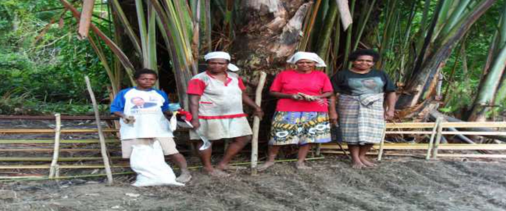
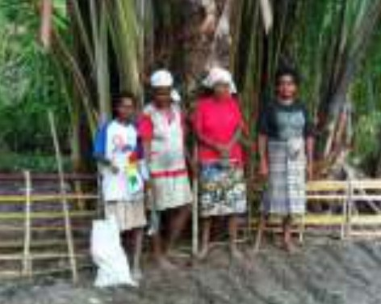

Pendidikan Alternatif
Membangun kemampuan menganalisis persoalan hingga ke akarnya bagi perempuan dan masyarakat sipil di tingkat akar rumput.
Fakfak · Papua Barat · Sejak 2009
KELOMANG adalah lembaga nonpemerintah berbentuk komunitas perempuan yang berlokasi di Kabupaten Fakfak, Provinsi Papua Barat.

Lembaga
Komunitas Perempuan Kelomang
Anggota aktif
30 perempuan
Pendekatan dan program
KELOMANG peduli terhadap pemberdayaan perempuan dan transformasi sosial di Papua melalui pendidikan alternatif, pengorganisasian masyarakat, dan pendampingan terhadap perempuan.
Membangun kemampuan menganalisis persoalan hingga ke akarnya bagi perempuan dan masyarakat sipil di tingkat akar rumput.
Menumbuhkan rasa solidaritas dan kesadaran untuk mengorganisasi diri agar memiliki posisi tawar di komunitasnya.
Mendampingi perempuan Suku Mbaham-Matta agar berdaya, terdidik, dan terorganisasi.
Riset partisipatif, penerbitan makalah analisis sosial-politik, investigasi dan monitoring, serta diskusi-diskusi tentang isu-isu gender.
Membentuk lembaga-lembaga ekonomi di tingkat kampung sebagai alternatif untuk menjawab kebutuhan akan akses dana bagi perempuan marginal.
Mengembangkan manajemen pendidikan dan kesehatan berbasis masyarakat adat, ekonomi rakyat melalui koperasi, serta pemberdayaan institusi-institusi rakyat.
2009
Tahun berdiri
Didirikan 25 Agustus 2009
30
Anggota aktif
Perempuan Suku Mbaham-Matta
3
Desk program
Perempuan, ekonomi, pendidikan
4
Nilai organisasi
Pegangan seluruh anggota
Tentang kami
KELOMANG percaya bahwa Tanah Papua yang berkeadilan hanya dapat dicapai jika perempuan dan masyarakat sipil di tingkat akar rumput berdaya, terdidik, dan terorganisasi, sehingga memiliki posisi tawar dan mampu mengontrol berbagai hal yang terjadi di komunitasnya.

Anggota dari
Suku Mbaham-Matta
Jika orang kecil dalam jumlah banyak di banyak tempat kecil melakukan hal-hal kecil, hal-hal besar akan dapat dicapai.
Visi dan misi
Masyarakat adat, khususnya perempuan, yang mampu mengelola sumber daya alamnya sendiri secara mandiri, hidup harmonis, serta bebas dari diskriminasi, kekerasan, dan ketidakadilan.
01
Melakukan pendidikan publik untuk mewujudkan kesetaraan gender, demokrasi, penegakan hukum, dan HAM.
02
Melakukan mobilisasi kesadaran kritis untuk mendorong inisiatif masyarakat agar dapat berpartisipasi dalam mewujudkan keadilan dan kesejahteraan bagi perempuan Papua.
03
Membangun ekonomi rakyat melalui usaha pengelolaan sumber daya alam, pelestarian lingkungan hidup, serta pengembangan budaya untuk mewujudkan kesejahteraan perempuan Papua.
04
Mendorong kebijakan publik yang berpihak pada dan melindungi hak-hak perempuan Papua serta kelompok-kelompok masyarakat adat Papua.
Galeri
Potret kegiatan para anggota KELOMANG di kebun, di pondok, dan dalam pertemuan bersama.
Mari terhubung
KELOMANG ingin menjadi tempat pembelajaran bagi semua pihak demi mendukung inisiatif dan kedaulatan rakyat kecil.